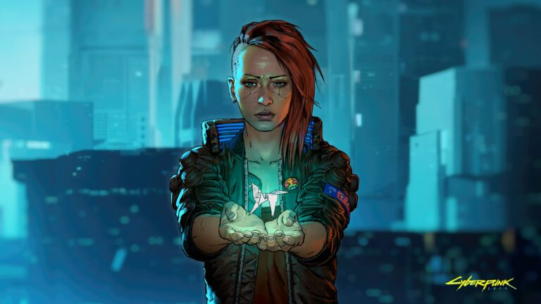
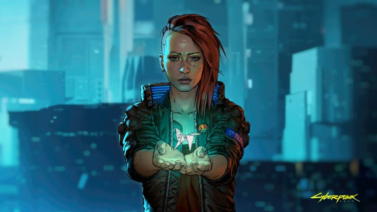

Cyberpunk gallery
Cyberpunk 2077 est un jeu de rôle futuriste et dystopique inspiré du jeu de rôle papier du même nom. Dans un monde devenu indissociable de la cybernétique, l'indépendance des robots humanoïdes pose quelques problèmes...
Cyberpunk 2077 est un jeu de rôle futuriste et dystopique inspiré du jeu de rôle papier du même nom. Dans un monde devenu indissociable de la cybernétique, l'indépendance des robots humanoïdes pose quelques problèmes...
